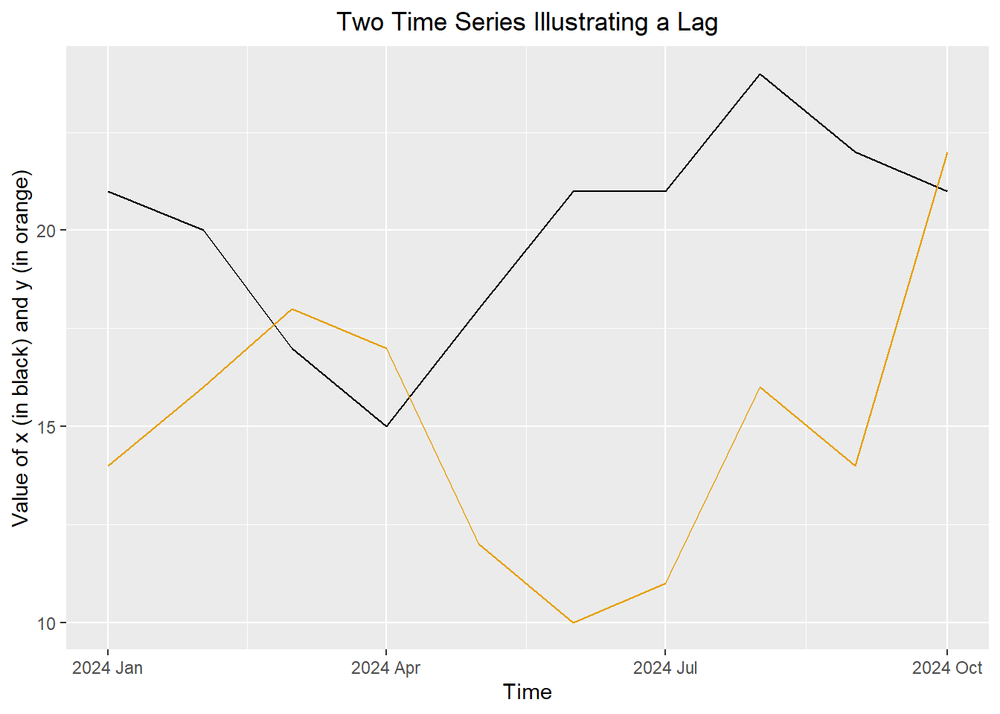
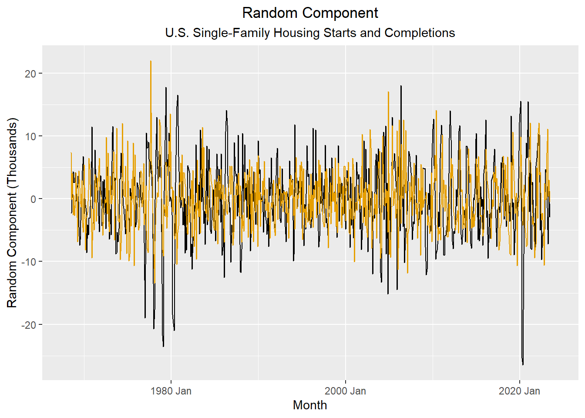

sample_df <- data.frame(
x = c(21, 20, 17, 15, 18, 21, 21, 24, 22, 21),
y = c(14, 16, 18, 17, 12, 10, 11, 16, 14, 22)
) Leading Variables and Associated Variables
Chapter 3: Lesson 1
Learning Outcomes
Explain the purpose and limitations of forecasting
- Define lead time
- Define forecasting
- Differentiate causation from correlation
Explain why there is not one correct model to describe a time series
- Explain why there can be several suitable models for a given time series
Use cross-correlation analysis to quantify lead/lag relationships
- Explain forecasting by leading indicators
- Define the population k-lag ccvf
- Define the population k-lag ccf
- Define the sample k-lag ccvf
- Define the sample k-lag ccf
- Estimate an ccf for two time series
- Interpret whether a variable is a leading indicator using a cross-correlogram
Evaluate the limitations of forecasting models based on past trends
- Explain how unexpected future events may invalidate forecast trends
- Avoid over-extrapolation of fitted trends beyond reasonable time horizons
Preparation
- Read Sections 3.1-3.2
- Note: There is a typo in the book on page 47. Equation (3.5) gives the sample ccf, not the sample acf.
Learning Journal Exchange (10 min)
Review another student’s journal
What would you add to your learning journal after reading another student’s?
What would you recommend the other student add to their learning journal?
Sign the Learning Journal review sheet for your peer
Small Group Discussion: Why Forecast? (5 min)
Class Discussion: Definition of the Sample CCVF and Sample CCF (5 min)
Sample Cross-Covariance Function (ccvf)
In Chapter 2, Lesson 2, we explored the covariance of a time series with itself, shifted by \(k\) units of time. Now, we will consider a similar idea, where we compare one time series as being related to a shift of \(k\) time units relative to another time series. When one time series leads another, we can sometimes use the one that leads to predict the one that lags–at least in the short term.
The sample cross-covariance function (ccvf) is defined as:
\[ c_k(x,y) = \frac{1}{n} \sum\limits_{t=1}^{n-k} \left(x_{t+k} - \bar x \right) \left( y_t - \bar y \right) \]
Sample Cross-Correlation Function (ccf)
We define the sample cross-correlation function to help us identify when one variable leads another and by how many time periods. Note that \(r_k\), given in the book as Equation (3.5), is misidentified there as the sample acf.
\[ r_k(x,y) = \frac{ c_k(x,y) }{ \sqrt{ c_0(x,x) \cdot c_0(y,y) } } \]
Small Group Activity: Computing the Sample CCF (20 min)
Suppose we have collected 10 values each from two time series. You can use the following command to read the values into R.
Figure 1: Superimposed plot of two simulated time series

Small-Group Activity: Single Family Housing Starts and Completions (10 min)
The U. S. Census Bureau publishes monthly counts of the number of building permits issued for new housing construction, the number of housing units started, and the number of housing units completed. We will consider the number of single-family units started and completed each month.
Figure 3: Time series plot of new single housing starts and completions in the U.S.
Show the code
# read and clean the data
housing <- rio::import("https://byuistats.github.io/timeseries/data/housing.csv") |>
rename(
permits = permits_single_family,
starts = starts_single_family,
completions = completions_single_family
) |>
mutate(date = my(month)) |>
mutate(month = yearmonth(date)) |>
dplyr::select(month, permits, starts, completions) |>
as_tsibble(index = month)
autoplot(housing, .vars = starts) +
geom_line(data = housing, aes(x = month, y = completions), color = "#E69F00") +
labs(
x = "Month",
y = "Housing Units (Thousands)",
title = "U.S. Single-Family Housing Starts and Completions"
) +
theme(plot.title = element_text(hjust = 0.5))The plot above illustrates the number of single-family dwellings started and completed each month from January 1968 through December 2023.
We decompose these time series to remove the trend and seasonal component. Then, we compute the sample ccf for the random components.
Figure 4: CCF plot of random component of new single housing starts and completions in the U.S.
Show the code
starts_r_ts <- model(housing, feasts::classical_decomposition(starts)) |>
components() |>
select(month, random) |>
rename(random_starts = random)
completions_r_ts <- model(housing, feasts::classical_decomposition(completions)) |>
components() |>
select(month, random) |>
rename(random_completions = random)
random_joint <- starts_r_ts |>
right_join(completions_r_ts, by = join_by(month))
autoplot(random_joint, .vars = random_starts) +
geom_line(data = random_joint, aes(x = month, y = random_completions), color = "#E69F00") +
labs(
x = "Month",
y = "Random Component (Thousands)",
title = "Random Component",
subtitle = "U.S. Single-Family Housing Starts and Completions"
) +
theme(
plot.title = element_text(hjust = 0.5),
plot.subtitle = element_text(hjust = 0.5)
)
Figure 5: ACF for the random components of the housing starts and completions
Show the code
acf_starts <- ACF(random_joint, y = random_starts) |> autoplot() +
labs(title = "ACF of Random Component of Single-Family Housing Starts")
acf_completions <- ACF(random_joint, y = random_completions) |> autoplot() +
labs(title = "ACF of Random Component of Single-Family Housing Completions")
acf_starts / acf_completionsFigure 6: CCF for random components of the housing starts and completions
Show the code
random_joint %>%
CCF(y = random_completions, x = random_starts) %>%
autoplot() +
labs(
title = "CCF for Random Component of Housing Starts (x) and Completions (y)",
subtitle = "Single-Family Units in the U.S."
) +
theme(
plot.title = element_text(hjust = 0.5),
plot.subtitle = element_text(hjust = 0.5)
)Table 3: CCF for Random Components of Housing Starts (x) and Housing Completions (y)
Show the code
random_joint |>
CCF(y = random_completions, x = random_starts)| lag | -12M | -11M | -10M | -9M | -8M | -7M | -6M | -5M | -4M | -3M | -2M | -1M | 0M |
|---|---|---|---|---|---|---|---|---|---|---|---|---|---|
| ccf | 0.025 | -0.178 | -0.249 | -0.274 | -0.263 | -0.055 | 0.067 | 0.19 | 0.285 | 0.254 | 0.278 | 0.193 | 0.152 |
| lag | 0M | 1M | 2M | 3M | 4M | 5M | 6M | 7M | 8M | 9M | 10M | 11M | 12M |
|---|---|---|---|---|---|---|---|---|---|---|---|---|---|
| ccf | 0.152 | -0.124 | -0.245 | -0.318 | -0.311 | -0.216 | -0.073 | 0.069 | 0.178 | 0.256 | 0.26 | 0.165 | 0.042 |
Class Activity: Maximum Solar Angle and Daily High Temperature (5 min)
In this example, we examine the relationship between the maximum angle the sun makes with the horizon (at midday) and the daily high temperature in Rexburg, Idaho. The maximum angle of the sun is related to the amount of heat a given area on the earth is able to absorb. If the angle is higher, we would expect warmer temperatures.
We can compute the maximum angle the sun makes with the horizon (the angle at solar noon) for any given day.
Show the code
# functions for angle conversions
deg2rad <- function (x) {x / 180 * base::pi}
rad2deg <- function (x) {x / base::pi * 180}
# Read and clean rexburg weather data
rexburg_daily_ts <- rio::import("https://byuistats.github.io/timeseries/data/rexburg_weather.csv") |>
mutate(year_month_day = ymd(dates)) |>
mutate(
days_since_ref_date = as.integer(year_month_day - mdy("12/31/2010")),
declination = 23.45 * sin(deg2rad(360 * (284+days_since_ref_date)/365.25)),
max_solar_angle = (sin(deg2rad(43.825386)) * sin(deg2rad(declination))
+ cos(deg2rad(43.825386)) * cos(deg2rad(declination)) * cos(0))
|> asin()
|> rad2deg()
) |>
rename(high_temp = rexburg_airport_high) |>
select(year_month_day, max_solar_angle, high_temp) |>
as_tsibble(index = year_month_day)
rexburg_daily_ts %>% head# A tsibble: 6 x 3 [1D]
year_month_day max_solar_angle high_temp
<date> <dbl> <int>
1 1999-01-02 23.2 30
2 1999-01-03 23.3 25
3 1999-01-04 23.4 26
4 1999-01-05 23.5 29
5 1999-01-06 23.6 32
6 1999-01-07 23.7 31The angle of the sun at solar noon is based on a deterministic formula, not daily measurements. Consequently, it is composed only of a seasonal component with period 365.25 days. If we remove the seasonal component before computing the ccf, the random component will be zero. So, even though we usually remove the trend and seasonal component before computing the ccf, we will not do it in this example.
The figure below illustrates the daily high temperature in Rexburg, Idaho (in black) and the angle of the sun with the horizon at solar noon (in red) over a 7-year span.
Figure 7: Daily high temperature in Rexburg, Idaho and the maximum solar angle
Show the code
rexburg_daily_ts |>
filter(year(year_month_day) > 2016) |>
autoplot(.vars = high_temp) +
geom_line(aes(x = year_month_day, y = max_solar_angle), color = "#D55E00", linewidth = 2) +
scale_y_continuous(sec.axis = sec_axis(~., name = "Max Solar Angle (in degrees)")) +
labs(
x = "Date",
y = "High Temp (F)",
title = "Daily High Temperature in Rexburg, Idaho"
) +
theme(plot.title = element_text(hjust = 0.5))Notice that the orange curve “leads” the black time series. The peaks and valleys first occur in the maximum solar angle and then days later in the daily high temperatures.
Figure 9: ACF and CCF plots for maximum solar angle and daily high temperature in Rexburg, Idaho
acf_solar <- ACF(rexburg_daily_ts, y = max_solar_angle) |> autoplot() +
labs(title = "Maximum Solar Angle")
acf_temp <- ACF(rexburg_daily_ts, y = high_temp) |> autoplot() +
labs(title = "Daily High Temperature")
joint_ccf_plot <- rexburg_daily_ts |>
CCF(x = max_solar_angle, y = high_temp) |> autoplot() + # Note: x lags y; x predicts y
labs(title = "CCF Plot")
(acf_solar + acf_temp) / joint_ccf_plotTable 4: CCF for maximum solar angle and daily high temperature in Rexburg, Idaho
|
|
|
|
Compare the two plots below. The tab on the left shows the relationship between the maximum solar angle on a specific day with the high temperature for that day. The tab on the right provides a scatter plot of the maximum solar angle from 28 days ago and the daily high temperature for the current day.
Figure 10: Scatter plots of maximum solar angle and daily high temperatures for Rexburg Idaho showing the difference in the correlation when the data are lagged
Summary
Homework Preview (5 min)
- Review upcoming homework assignment
- Clarify questions